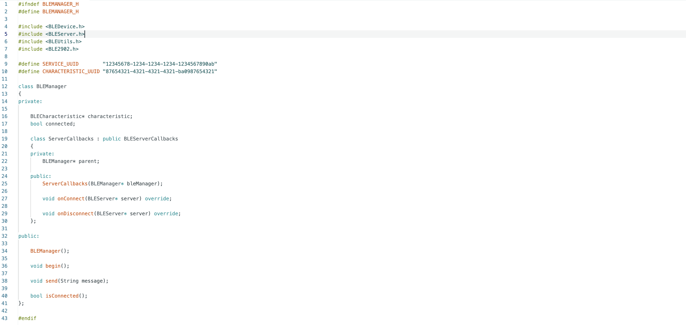
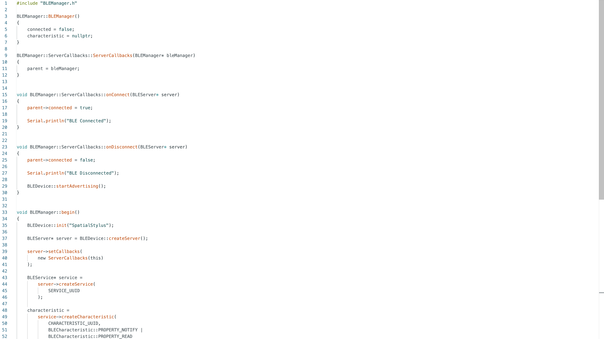
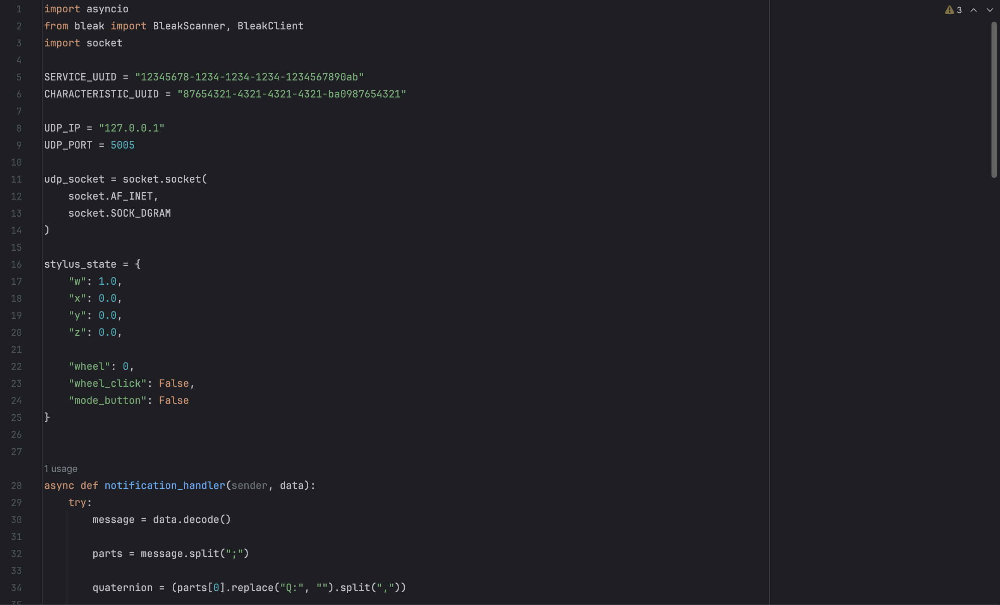
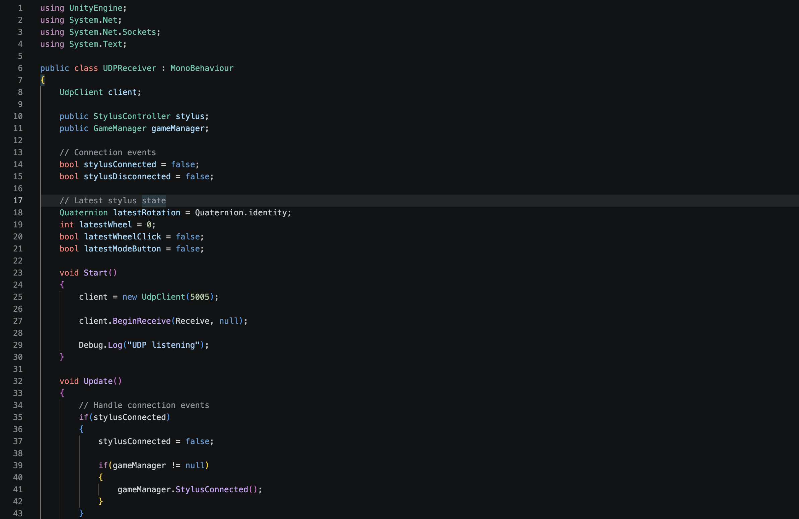

As part of my MVP, I needed to connect my stylus to my Mac (Which simulates the raspberry pi connected to my glasses) to control the user interface.


BLE Manager, Class definition code & Arduino quaternion output.
I started by searching how to use bluetooth with my Xiao ESP32 and discovered that there are two types: Bluetooth, and bluetooth low energy (BLE). Given the stylus eventually will be battery powered, I chose BLE because it significantly reduces power draw and only provides updates to the receiver when needed.
Libraries for BLE are already installed on the Xiao, so it was very easy to import those libraries and interact with bluetooth. On top of using classes I discovered that good coding practice involves writing a header file which tells the Xiao what my BLE class looks like without defining functions, and then an implementation file which defines the functions in the class. These are shown above.
The implementation of the class has simple functions such as connection, disconnection, and send. Quaternions from the 9-axis sensor and button/encoder states are the main data that will be sent over BLE.

Mac Python receiver code & Python output.
With BLE working on the Xiao, now it was time to program a Python receiver, which acts as an intermediary between the Xiao and the Unity user interface.
With BLE working on the Xiao, now it was time to program a Python receiver, which acts as an intermediary between the Xiao and the Unity user interface. This involved writing a single script that received data from bluetooth, then broadcast it to Unity over the UDP local IP address (127.0.0.1).
Given that updates to Unity should only be sent when there is an update from the Xiao, I used asynchronous functions that only run when there is new data. Shown above is the start of the code and the received data from the stylus.

Unity UDPReceiver & Demo video
Unity communicates with Python over UDP, so I created a UDPReceiver C# script that handles connection, updates, and disconnection from the stylus via Python.
This system of connected scripts, leads to very smooth stylus experience. All that remains is to switch some of the axes around in the code so that the stylus can calibrate such that the usb port on the xiao is the rear end of the pen, and all motions move like a real pen would move.